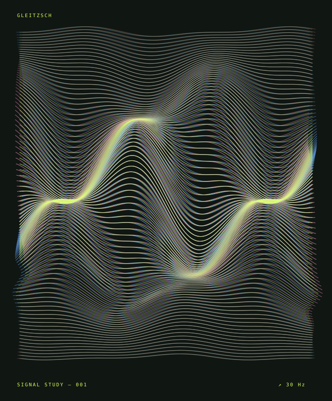

Let it wander.
Let the camera explore the effects for you. Colours separate, edges bend, things fall apart. Sometimes something interesting happens.
An experimental camera & photo editor
Depending on your definition of beauty.

Keep the accident
Let the camera explore the effects for you. Colours separate, edges bend, things fall apart. Sometimes something interesting happens.
Found something you like? Switch to Custom to stop the wandering. Keep the mix, tweak it, or make things considerably worse. Try Pixelate for a pixelated look, and adjust the pixel size in Custom.
Save your photos and videos to your photo library, and your favourite mixes to C1, C2 or C3. Some accidents are worth repeating.
Already have a photo? Tap Edit photo beside the shutter and choose a picture. Save the moment you like as a separate PNG.
I like the aesthetics of old CRT televisions losing their signal, chewed-up VHS tapes, and colours going where they shouldn’t. Working in the frequency domain with Fourier transforms gives me another way to play with that look, and occasionally discover something entirely different.
I wanted a bit of that world in my pocket, and figured someone else might enjoy it too. Whatever you make with Gleitzsch is part of the project. No grand mission, just a little more glitch in the world.
Under the hood, it’s decades-old signal-processing mathematics running on your phone’s CPU and GPU. The effects stay entirely on your device.
Thanks, Fourier, for the mathematics. Sorry about the results.
And thanks to Codex for helping me express what I feel through code, and to Cursor for lending a hand along the way.
Questions & ideas ↗Availability
iOS: I’m currently stuck in a Kafkaesque limbo with Apple, waiting to be able to offer even a TestFlight beta. I don’t know when that will change.
Android / early access
An early Android build, shared directly from this website. I haven’t registered for Google Play yet, so for now you’ll need to install the APK yourself.
Tested on Nothing Phone (3a). Video is currently silent, and Pixelate can be slow. More polished builds and easier updates are next; there’s no release date yet.
Nothing is sent to me automatically: no photos, usage data or crash reports. I don’t even know how many people have downloaded it. If you’d like to tell me how it goes, get in touch.
Download checksum (SHA-256)